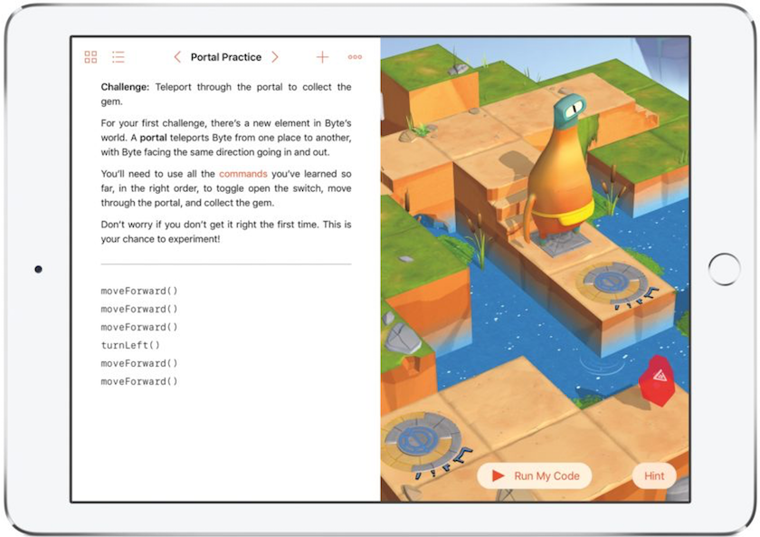

Dat programmeren naast leuk ook zeer leerzaam is kunnen iPad-gebruikers vanaf het najaar ervaren. Met de komst van iOS10 lanceert Apple een interactief lesprogramma onder de naam: Swift Playgrounds. Toen wij dit zagen ging ons hart sneller kloppen. Swift Playgrounds maakt het leren schrijven van programmacode voor iedereen met een iPad met iOS10 toegankelijk. Zo kunnen (groot)ouders en kinderen of kinderen in groepsverband op school of thuis samen aan de gang.
Tim Cook vestigde tijdens de Keynote al even de aandacht op dit nieuwe programma om jong en oud aan de hand van programmeerlessen en -opdrachten op een speelse manier de ontwikkeltaal Swift te leren. Naast standaardlessen voor beginners zullen ook gevorderden het nodige van hun gading vinden. Apple heeft tijdens de WWDC- sessie 408 uitgebreider stil gestaan bij het belang van Swift Playgrounds. Daarbij kwam naar voren dat Apple zelf de inhoud van Swift Playgrounds gaat beheren. Buitenstaanders vanuit het onderwijs of geïnteresseerde ontwikkelaars kunnen vanaf het najaar ook hun steentje bijdragen.
Swift Playgrounds bestaat uit 3 delen: Learn to code 1 Swift Fundamentals, Learn to code 2 Beyond the Basics en een onderdeel met Challenges (uitdagingen). In deel 1 komen de basisvaardigheden van Swift aan de orde komen. Hierbij moet je onder andere denken aan variabele en constante waarden, rekenkundige functies, het gebruik van lussen, het zelf bouwen van allerhande functies en het verzamelen van gegevens voor gebruik in jouw eigen programma. Deel 2 gaat in op de grafische mogelijkheden en multimedia. Voor wie zijn/haar kennis wil toetsen of aanscherpen zijn er diverse uitdagingen (Challenges).
Het mooie van Swift Playgrounds is dat het een krachtige lesomgeving toegankelijk maakt binnen een intuïtieve aanrakingsgevoelige gebruikersomgeving. Swift Playgrounds leent zich in deze opzet uitstekend om op een speelse manier Swift bij iedereen tussen de oren te krijgen. Gebruikers worden bij het ontwerpen en ontwikkelen van hun eigen code op vele manieren met theorie en een bibliotheek aan commando’s gestimuleerd er het beste van te maken.
Apple ziet een belangrijke taak weggelegd voor onderwijsgevenden die Swift Playgrounds kunnen inzetten om hun lesmateriaal te verduidelijken of voor leerlingen die hun lesmateriaal uitwerken aan de hand van een Swift Playground. Maar daar stopt het niet! Op het forum van SwiftDev.nl kun jij je vragen over jouw eigen playgrounds nu al kwijt. Ook vóór het najaar kunnen Swift Playgrounds gebruikers hun eigen programmacode met andere gebruikers via SwiftDev.nl delen. Maak daar actief gebruik van, omdat jouw playgrounds voor iedereen uiterst leerzaam zijn.
Voor wie een echt functioneel programma wil ontwikkelen dient de in Swift Playgrounds gemaakte code in te lezen in Xcode om daar verder te gaan met een gebruikersomgeving of anderszins de puntjes op de i te zetten. Bij SwiftDev.nl hopen wij natuurlijk dat er binnenkort ook een Nederlandstalige versie wordt uitgebracht.
Swift Playgrounds kun je als ontwikkelaar nu op developer.apple.com samen met iOS10 ophalen. In juli volgt de publieke beta-versie. Het grote publiek zal tot het najaar moeten wachten.